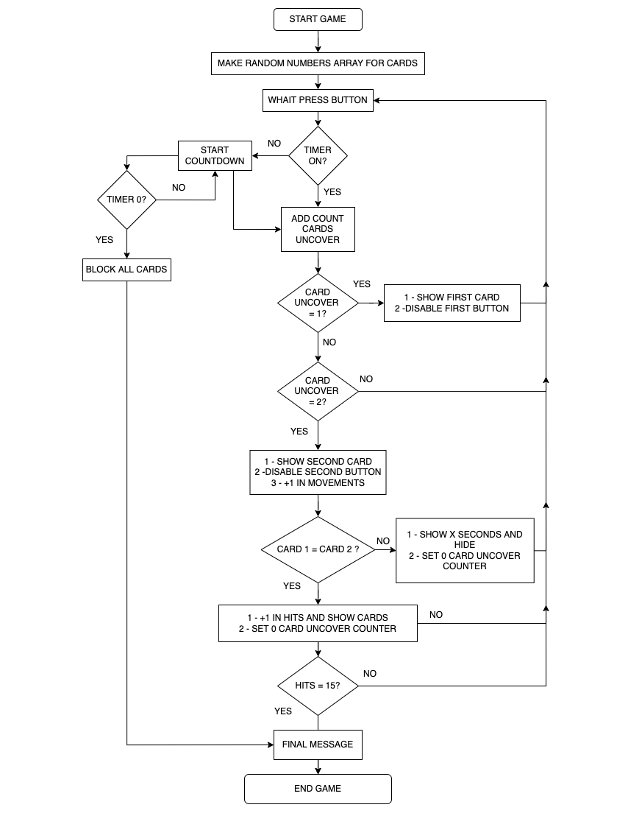

Todos aquellos desarrolladores que quieren hacerse de un portfolio, en muchas ocasiones se crean juegos, dependiendo del lenguaje, de una forma u otra, haciendo que apliquemos aquello que aprendimos de una forma mas didáctica, divertida (aunque depende del juego) y porque no, creativa.
Dando mis primeros pasos en JavaScript decidí crear un juego de cartas de memorias que llame MEMOGI, el cual tome como referencia los que ya existían en internet, las formas en que se podia estructurar la logia y así crear mi propio código y agregarle mas estilo o cambios en base a mis básicos conocimientos de JavaScript.
En este post te voy a explicar cómo lo hice y como vos también podes crear el tuyo, pero antes si así lo quieres, puedes ir a descargar los archivos y recursos que utilizamos en proyecto.
Repositorio GitHub en Repo MEMOGI
Live view en MEMOGI

El proyecto esta dividió en dos videos, uno en donde creamos el HTML y el CSS, y otro en donde le damos la lógica al juego en base a un diagrama de flujo que cree.
Recuerda que puedes descargarlo aquí https://github.com/joaquinmetayer/memogi
Diagrama de flujo que vemos en el video
Y no mucho más! Espero que te haya sido de ayuda si estas que proyecto sumar a tu portfolio o por el simple hecho de practica como desarrollador de JavaScript!

Nos vemos en Web3!